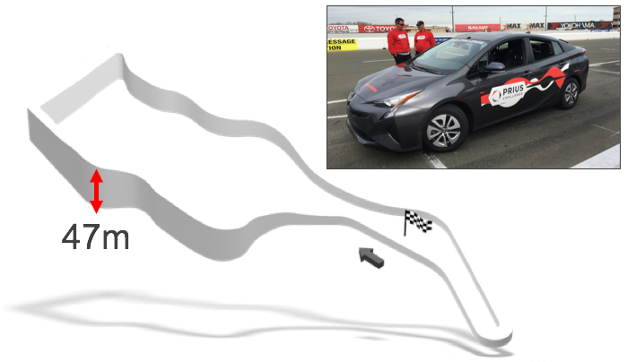
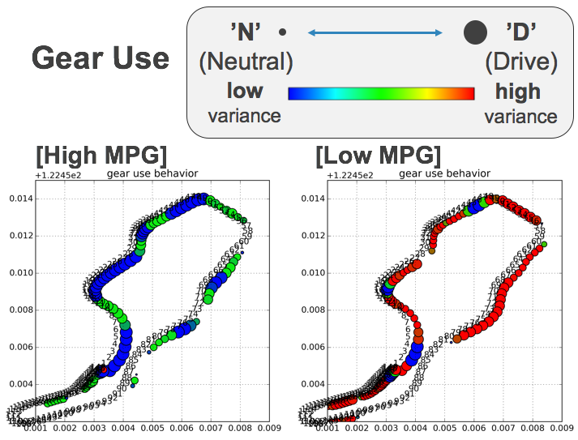

Overview
Prius Challenge was the racing competition about maximizing mpg for Prius by data-driven strategy. This involves both data science(theory) and real driving skills(practice). I applied both two different machine learning approaches to identify the best strategy to achieve higher mpg. The analysis revealed, for example, where to use 'neutral'/'drive' or 'EVmode(on/off)'. As a result, our team got the award of 'Best MPG by Machine Learning'! Plus, we achieved 83mpg(w/o penalties), while Toyota dream team did 86mpg. Yeah, we were so close and I can say data-driven approach worked! This competition was held at Sonoma Raceway by Toyota Research Institute in Mar 3rd, 2017. Our team was composed of me(data scientist) and 4 other members of great drivers!Problems
Q1. How do we identify best strategy to maximize mpg? Given the dataset, it is required to identify how use inputs (throttle, brake, gear and EV-mode)Q2. How does data scientist deliver the strategy to drivers? This is not only data analytics but also teamwork. Delivering the result to driver is key part.
(Sonoma Raceway has tough uphill and downhill; 47[m] height. This makes this challenge hard.)


Solution
hogehogeResult